Headless Drupal using REST exports with authentication
What do we need?
- Flexibility
- Ease of Data Maintenance
So we used Views's REST Export
- Need Multiple Displays
Example Taxonomy Reference: Product Type
Taxonomy View: Export Display for Product Type
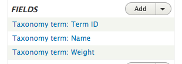Taxonomy View (Continued): Contextual Filter
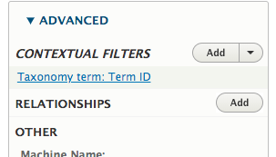Taxonomy View (Continued): Allow multiples
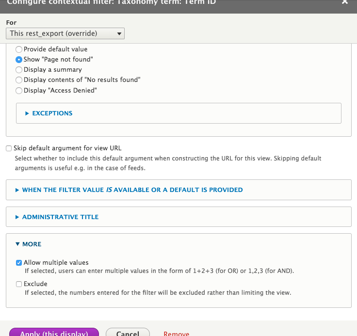Notice the delimiters: plus (+) or commas (,)
Product View: Configure Product Type Field
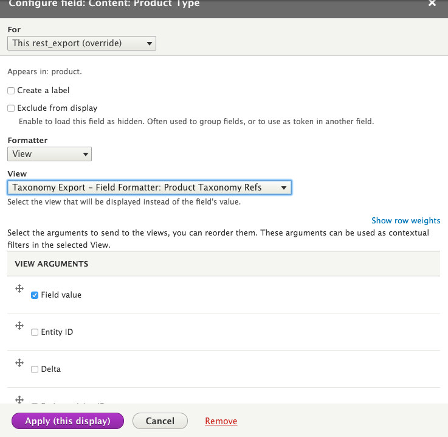Continued Product Type Setup: Multiple
Remember 'allow multiples' for Taxonomy?
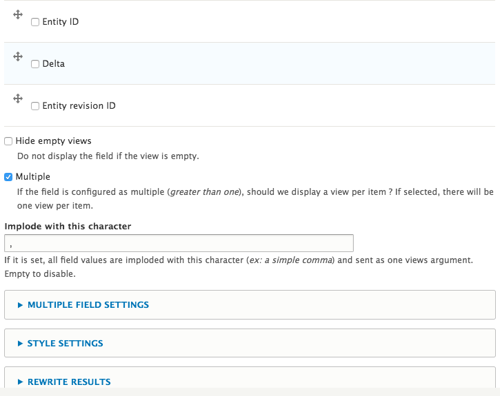
[
{
"title": "All Eyez on Me",
"nid": "80",
"field_product_type": "[{\"tid\":\"79\",\"name\":\"Digital\",\"weight\":\"1\"},{\"tid\":\"78\",\"name\":\"Streaming\",\"weight\":\"0\"}]",
"field_sort_weight": "3",
},
{
"title": "All Eyez on Me",
"nid": "6",
"field_product_type": "[{\"tid\":\"80\",\"name\":\"Physical\",\"weight\":\"2\"}]",
"field_sort_weight": "4",
}
]
[
{
"tid": "79",
"name": "Digital",
"weight": "1"
},
{
"tid": "78",
"name": "Streaming",
"weight": "0"
}
]
Set Up REST Web Services
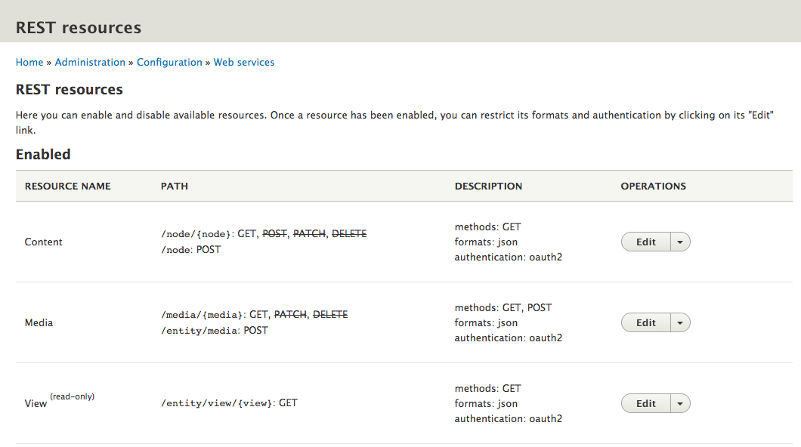Example: Media Entity
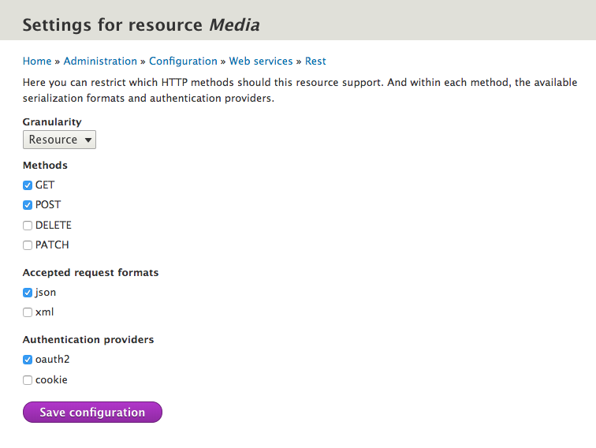Navigate to `simple_oauth`'s settings page.
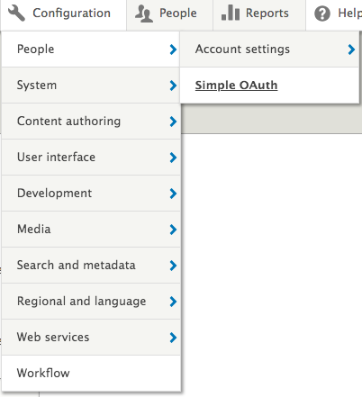(configured screenshot)
Setup a Consumer
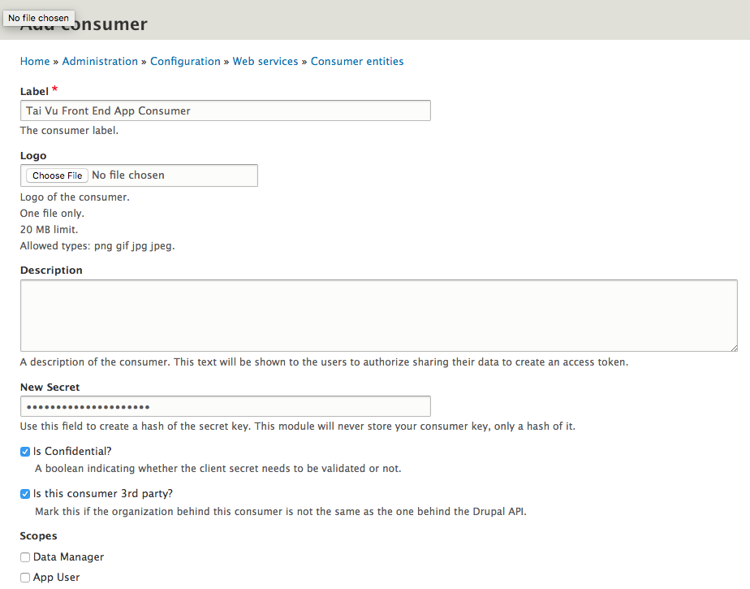- Token to access to exports
- Uses Roles to scope permissions
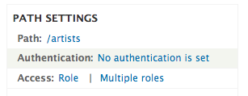 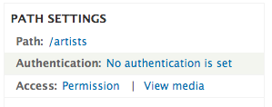$ drush cex